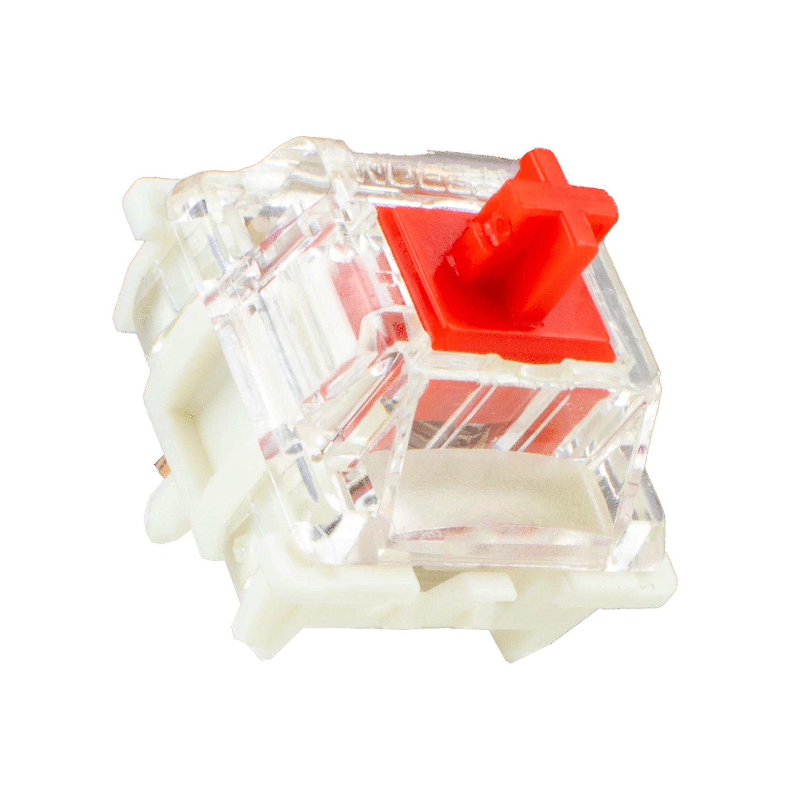
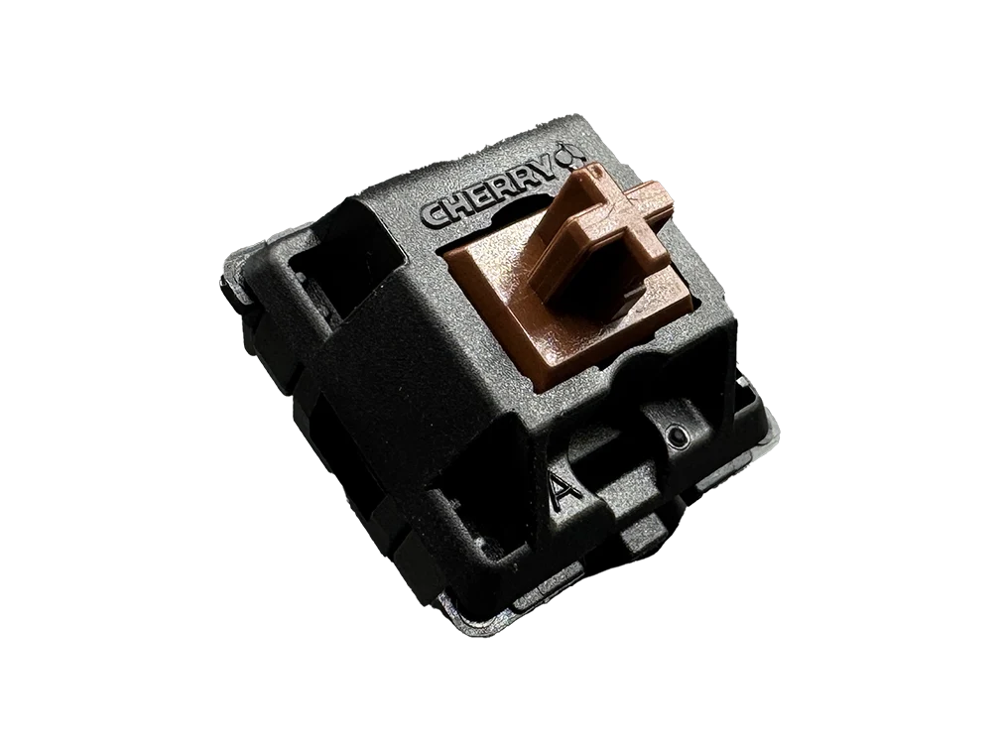
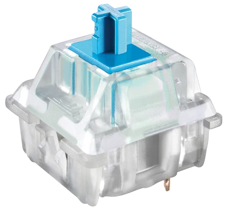
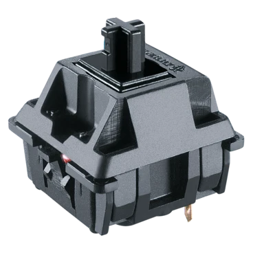
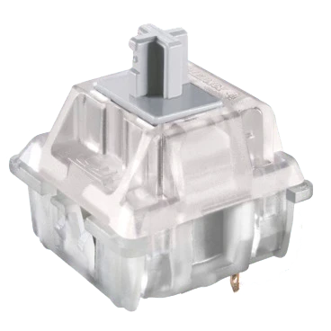
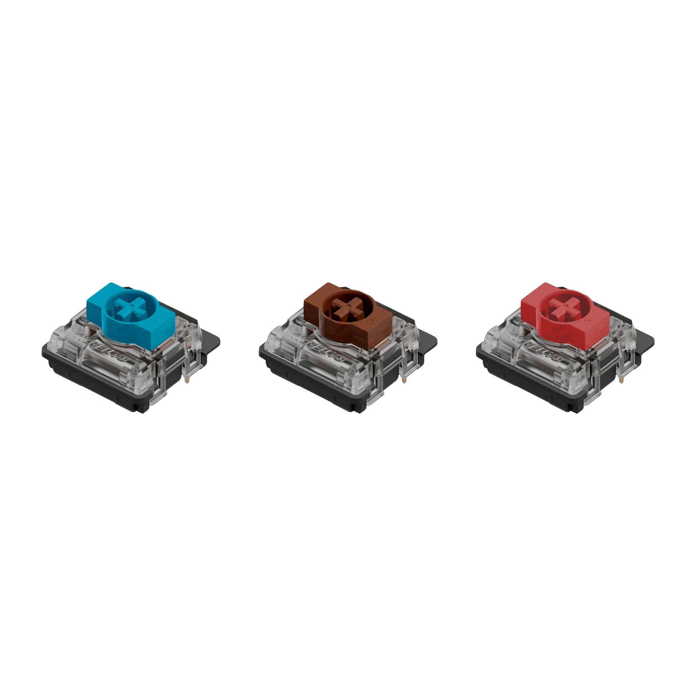

A switch is a mechanical component beneath each keycap on a keyboard that registers key presses. It determines the feel, sound, and responsiveness of the key when pressed.





Switches determine the feel and sound of your keyboard. Linear is smooth, consistent, and quiet but not silent. Tactile provides a noticeable bump that becomes the in between of linear and clicky. Clicky switches offer both tactile feedback and loud audible click sounds. Silent switches are designed to minimize noise like if you work in an office. Speed switches are optimized for rapid key presses, these are great for gaming. Each switch has pins at the bottom as well. These are very important because the pins connects the switch to the keyboard for it to be useable. Switches can either have 3-pin or 5-pin configurations. Look out for those details to know if your keyboard supports your switch that you want to use. Choose the type that matches your typing preference and/or gaming style.
Some switches come as normal profile and low-profile. Low-profile is like keys on a laptop. While normal profile is like using a regular keyboard for a PC.
